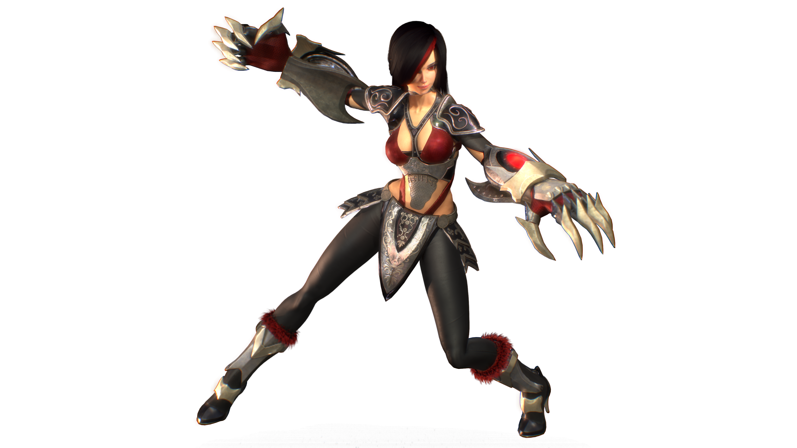

THE REMORSELESS |
|||

| 
| ||
REALM |
TYPE |
CLASS |
|
Grynn |
Melee |
Physical |
Reaper |
Region |
|||
Dashe Tribe |
|||
THE REMORSELESS |
|||
|
|
| ||
REALM |
TYPE |
CLASS |
|
Grynn |
Melee |
Physical |
Reaper |
Region |
|||
Dashe Tribe |
|||
Black smoke. A dull, reddish haze flickering upon the backdrop of Grynn’s ominous
Urakesh forest. Ruthless metal claws gleam in the firelight surrounding the figure, with
flames raging unrestrained, consuming the once peaceful settlement. From the sharp,
bladed tips, a telltale trail of blood is seeping along the path as the shrouded figure begins
to approach Tabitha. Slowly, everything is becoming tinged with the deepest red as the
vision recedes... Leaving only the somber red eyes of Malaia, the innocent newborn with
a Soul Potential capable of bringing ruin to the entire tribe.
Tabitha, the Dashe Elder, had an ability for foresight and premonition ranked as infallible
among a tribe blessed with the capacity to project their soul gems as weapons or special
abilities. As the prophecy became known throughout the Dashe, doombringer became
Malaia's nickname. Her parents were immensely proud of their daughter's potential, yet
despite their best efforts to shield her from mistreatment, Malaia grew resentful of the
tribe.
Deceit sowed chaos throughout the tribe's leaders, reaching full blaze when no one
stopped the Fremerian Empire from taking her father as a prisoner. With the loss of her
beloved father, Malaia grew ever closer to her older brother Exiel. Her mother quickly
succumbed to split-soul affliction, tipping over the edge and transforming her already
vulnerable state into one of total madness. Harassed by chief Kreto, the siblings had no
alternative but to leave behind their sick mother and turn to the deadly forest as their
haven.
Deep inside Grynn's uncharted regions, Malaia found herself emboldened by powers
sealed inside her soul gemstone. Ever present in her mind was the weakness and
helplessness she felt when the empire took her father, she never forgot all her suffering
and treatment by Dashe leaders. She promised herself to never again back down from
an opponent. The strength Malaia found within the Urakesh forest forged her from a kind
and gentle young girl into a remorseless huntress.
OFFICIAL ART

RELATED MYTHS